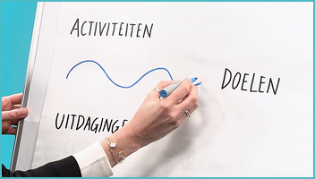
Home > Tekenmethodes
Tekenmethodes
Leren over jezelf en Reflecteren
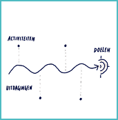
Roadmap
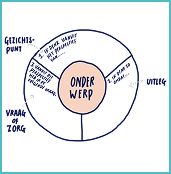
Cirkel van gezichtspunten
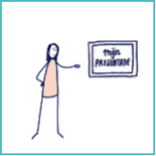
Over 5 jaar
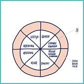
Diversiteitscirkel
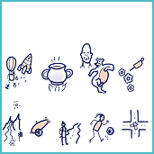
Metafoor
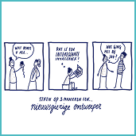
Kwaliteiten tekenen
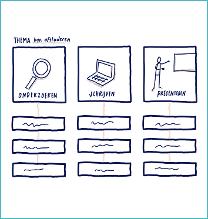
Stroomschema
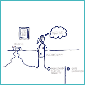
Mijn gebruiksaanwijzing
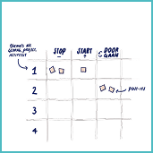
Stop-start-doorgaan
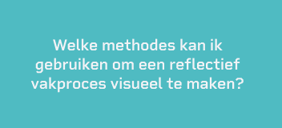
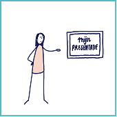
Reflecteren op een situatie
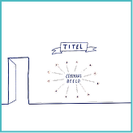
Sketchnote op de muur
Onderzoeken en Begrijpen
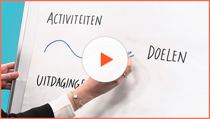
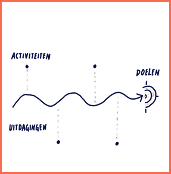
Roadmap
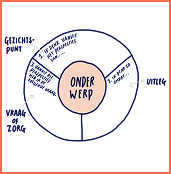
Cirkel van gezichtspunten
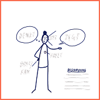
Over 5 jaar
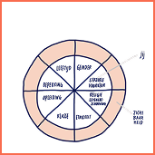
Diversiteitscirkel
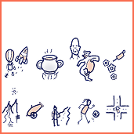
Metafoor
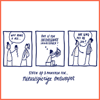
Kwaliteiten tekenen
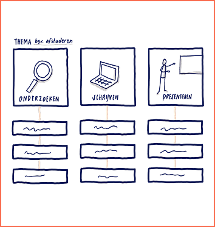
Stroomschema
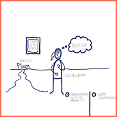
Mijn gebruiksaanwijzing
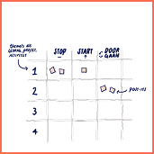
Stop-start-doorgaan
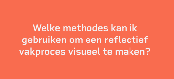
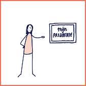
Reflecteren op een situatie
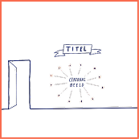